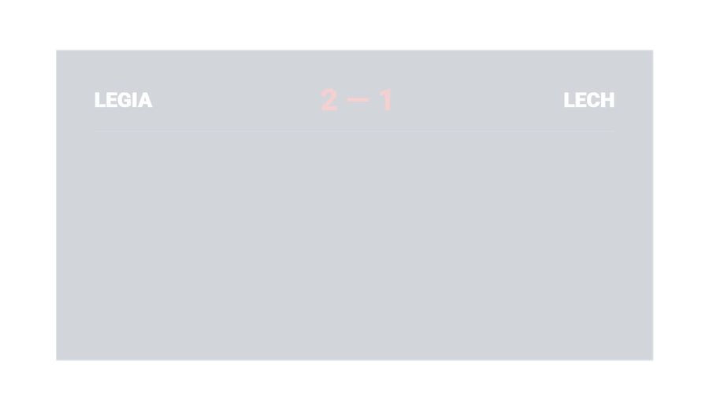
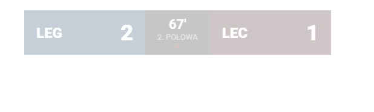
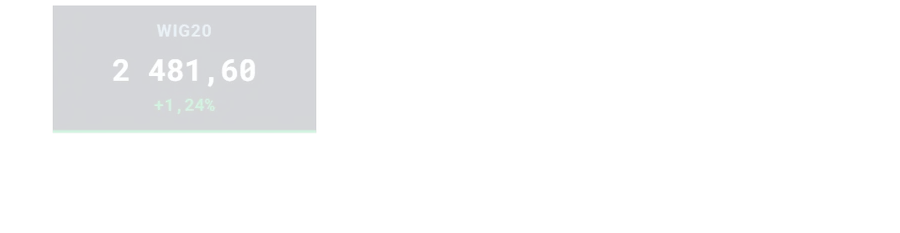
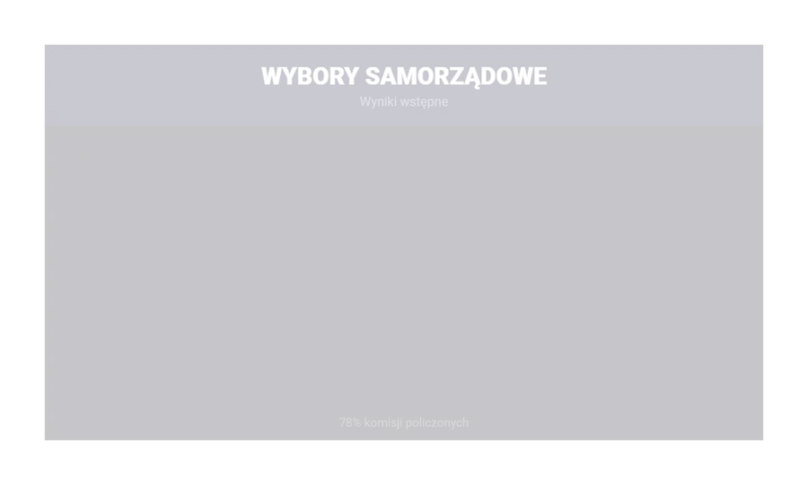
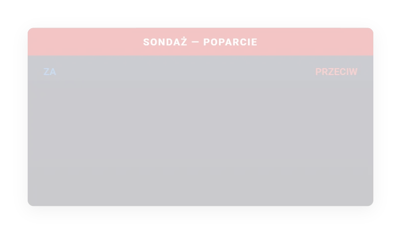
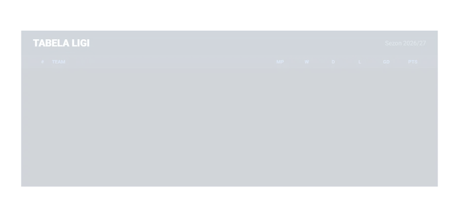
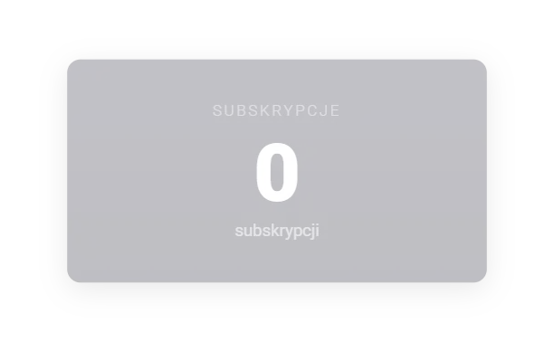
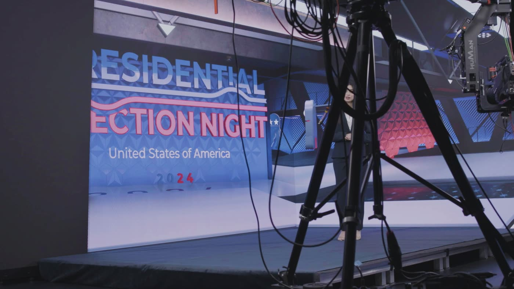
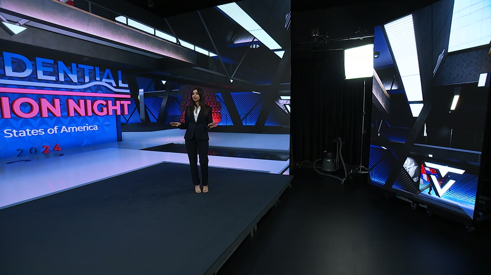

For one-person streams
Broadcast graphics without the menus.
Make live scores, polls, market moves and standings look like television. You tell Pellar what changed — typed today, spoken soon — and a working broadcast template animates in your scene. No design app. No menu tree.
Still in build. Nothing to buy today. We will show pricing before sign-ups open.
- 100+working templates
- 4creator categories
- Realbroadcast work behind it


Working Pellar templates rendered with sample data. These are not mockups.
Compatibility roadmap
The apps around your stream.
Creator output is still in development. We will only say “works with” after each app passes an end-to-end Pellar test.
- OBS StudioClosed-beta target
- vMixClosed-beta target
- StreamlabsNeeds Pellar QA
- XSplitNeeds Pellar QA
- Stream DeckIndirect, through OBS
- NDIOutput verified locally
OBS and vMix are the first creator-output test targets. Streamlabs and XSplit accept browser sources but Pellar has not passed QA in either. Stream Deck would control source visibility through OBS; it is not a direct Pellar integration. Logos identify their owners; no partnership is implied.
A chart like that normally means a motion designer, a broadcast graphics licence, and a wait. So most streams show a screenshot of a spreadsheet instead.
Pick. Enter. Add to your scene.
-
01
Pick a template
Over 100 broadcast templates — score bars, poll charts, results tables, league standings, market strips, lower thirds. The same ones we build for broadcasters.
-
02
Type the numbers in
A form, not a timeline. Set your colours and logo once, then let every graphic use the same brand kit.
-
03
Add one browser-source link
This creator-output step is in development, with OBS and vMix as the first closed-beta test targets.
Working templates, rendered with sample data.
Every graphic below was rendered from the product and captured frame by frame. Nothing here is a mockup. All data is sample data.





We deleted the menus on purpose.
The first Pellar was professional newsroom software. Playlists, players, integrations, and a menu for each. Watching real editors use it taught us an uncomfortable lesson: every menu is a place to get stuck.
So we rebuilt it around one input. You tell Pellar what you want on screen, and it fills the template. That interface is the product. The templates are what it's made of.
The newsroom that tried the rebuilt version called it a toy on day one. Within days it was part of how they worked. That's the version we're now sizing down for creators.
Voice control is for the moment your hands are busy.
You are mid-sentence, on camera, and the number just changed. You cannot alt-tab to a graphics app and you cannot ask an operator, because there is no operator.
The goal: say the update out loud and let the chart change while you keep talking.
Manual entry comes first. Voice is being designed for people who present alone, and we will not call it ready until a creator can use it reliably on air.
“Pellar, put the poll up.”
We build this kit for broadcasters.
Veles Productions builds and runs broadcast graphics for live television. The frames below are from our US Election Night 2024 package — the graphics going to air, the studio they came from, and the gallery they were run out of. Pellar is that same graphics work, made small enough for one person.





We know what this costs to make, because we make it. That is the point of putting it in your hands instead.
Early access before pricing
Help decide what ships first.
The product and its pricing are still being shaped. Waitlist members will see the offer before sign-ups open. No payment is required today.
Tell us what you stream
Sport, markets, current affairs, esports, or something we missed.
Shape the first library
Your use case helps set the order for scoreboards, polls, tables and tickers.
See the offer first
We will send beta timing and pricing before asking you to sign up or pay.
Questions
Is this another overlay pack?
No. A static pack gives you finished images. Pellar templates animate from the numbers you enter.
I am not a designer. Will this look bad?
You do not design anything. The templates are the same ones we build for broadcasters. You supply the numbers and the template controls the layout, the type and the animation. You can set your colours and your logo once. Every graphic after that uses them.
Will it work with my streaming app?
OBS and vMix are the first closed-beta targets. Streamlabs and XSplit can load browser sources, but Pellar still needs end-to-end QA in both before we claim compatibility.
When can I use it?
Not yet. The waitlist is real and the product is in build. We will tell you before we open it, and we will tell you what it costs before we ask you for money.
Help choose what ships first.
Tell us what you stream. We will use it to prioritise the first scoreboards, polls, tables and tickers, then send pricing before sign-ups open.